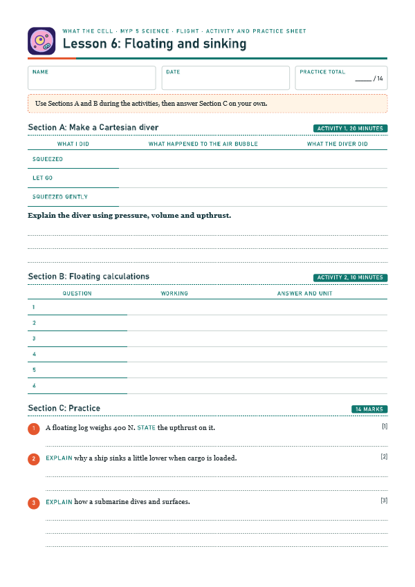

By the end of the lesson you can
- Explain why a floating object displaces its own weight of fluid
- Explain how ships, submarines and fish control floating
- Calculate how much of a floating object is under the surface
- Make and explain a Cartesian diver
Keys: arrows or a presentation clicker move the slides, F for full screen. Slides with a red dot have a video or simulation.
Videos (all 5 minutes or less)
- 2:39
Upthrust - GCSE Physics
Launchpad Learning. While you watch: What causes upthrust? Slide 10.
Simulations
- Lab
Flight Lab
What the Cell. Open Buoyancy and choose Boat: load cargo until the boat reaches its Plimsoll line.
- PhET
Print and practise

Activity and practice sheet
Used in the lesson’s activities, with practice questions. Your teacher has the answers.
Download (PDF)Lesson 6 slides
All 21 slides in one file, to read again or print. The video buttons on the slides open YouTube.
Download the slides (PDF)Revising? The Revision tab on the unit page has the unit notes and review.
Class activity pack
Everything to print for the lesson’s activities: picture cards, sorting mats, station cards with their kit lists, and the teacher’s set-up notes. Print it before class.
Download the activity pack (PDF)Notes: Floating and sinking
swim bladder
A gas sac that changes a fish's volume and so its upthrust. For example: a goldfish hovering in a tank.
Key words
| hull | hollow body of a ship |
|---|---|
| Plimsoll line | safe loading marks on a ship |
| ballast tank | fills with water or air to sink or rise |
| swim bladder | gas sac that controls a fish's depth |
| Cartesian diver | sinks when the bottle is squeezed |
| fraction submerged | object density / fluid density |
| compress | squash into a smaller volume |